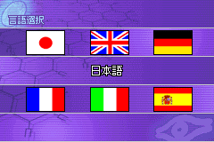
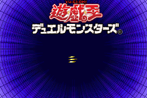

Yu-Gi-Oh! Duel Monsters Expert 3 (Japan) (En,Ja,Fr,De,Es,It)
Stateless / Passcode 💾 MultiBoot 🎮 4P Link
Cartridge Identity
- Game Code
BY3J(FamilyBY3)- Header Title
YUGIOHDMEX3- Maker / Revision
A4/ rev0- ROM Size
- 16.0 MiB (16,777,216 B)
- Save Media
None / Unknown- SHA-256
e11471d9e2ecc7aa425d2ca85b2def1ededc3689dbd1c4c5f1a5d771bfe85931- Engine / SDK Group
comm-014(25 families)
Screenshots


Link Cable & Multiplayer Communications
This title contains detected communication capabilities: 💾 MultiBoot 🎮 4P Link.
Detailed protocol specifications, SIO registers, Joybus commands, and MultiBoot sequences are documented in the Link & Multiplayer Reference.
- Multi-Player SIO (4P)
- 16-bit ring network · SIOCNT (
0x04000128) literals:0x035b98,0x07eb14,0x07ec5c· SIODATA32/SIOMULTI0 (0x04000120) literals:0x0807f8,0x3385e0 - Single-Cart MultiBoot
- Single-Cartridge MultiBoot (Download Play) client/server handler · Thumb SWI 0x25 (
0xDF25):0x099582,0x163696,0x21b2c4,0x256f28
Cartridge Storage Architecture: Stateless / Passcode
Zero non-volatile battery hardware: This cartridge PCB contains ROM only (no SRAM, Flash, or EEPROM chips). Progression is preserved via on-screen passcodes or session-only gameplay. No
.sav file is generated or required.
ROM Assets, Compression & Audio
- BIOS Compression
- LZ77 (
0x10): 0 streams · RLE (0x30): 0 streams - ROM Pointer Tables
- 64 tables (0 pointing to validated compressed streams)
- SDK Backup Tags
SRAM_V113
Asset Map (formatkit.asset-map.v1)
Download BY3J-r0-e11471d9e2ecc7aa.asset-map.json.gz (109,504 B (106.9 KiB)) Verified PASS · 37.13% coverage
| Metric | Bytes / Value | Entries |
|---|---|---|
| Identified | 2,396,362 B (2.29 MiB) (14.28%) | 929 |
| Mapped | 0 B (0.00%) | 0 |
| Opaque | 3,832,534 B (3.65 MiB) (22.84%) | 1 |
| Unknown | 10,548,320 B (10.06 MiB) (62.87%) | 900 |
| Total ROM Size | 16,777,216 B (16.00 MiB) | 1,830 |
| Coverage % | 37.13% | — |
| Entries w/ Code Refs | 837 / 1,830 (45.74%) | — |
Top Identified Formats: audio.konami-sample (150 · 2,289,876 B (2.18 MiB)) · gfx.gba-palette (777 · 105,984 B (103.5 KiB)) · compress.bios-huffman (1 · 310 B) · gba.rom-header (1 · 192 B)
Largest unknown Extents (Headerless / Custom Asset Candidates)
| Offset | Size | Shannon Entropy | Code Refs |
|---|---|---|---|
0x0023C32C | 3,388,608 B (3.23 MiB) | 7.672 bits/B | 0 |
0x00151A38 | 728,016 B (711.0 KiB) | 7.631 bits/B | 0 |
0x00B24D54 | 713,836 B (697.1 KiB) | 5.524 bits/B | 0 |
0x0074E78C | 360,480 B (352.0 KiB) | 5.813 bits/B | 0 |
0x00709868 | 282,372 B (275.8 KiB) | 4.518 bits/B | 0 |
gzip -dk BY3J-r0-e11471d9e2ecc7aa.asset-map.json.gz && gbakit map verify rom.gba BY3J-r0-e11471d9e2ecc7aa.asset-map.json
gbakit assets export rom.gba --asset-map BY3J-r0-e11471d9e2ecc7aa.asset-map.json -o out/Text, Fonts & Scene Data
- Primary Text Encoding
- Plain ASCII (uncompressed) (
13,888ASCII strings ·200Shift-JIS runs) - Font & VWF Indicators
- VWF Width Table 1bpp Font · BIOS SWIs: BitUnPack
0x10:4· LZ770x11/12:10· Huffman0x13:6· RLE0x14/15:11 - Scene & Packaging
24ROM pointer tables (≥32 entries,2≥200) ·388relativeu32TOCs ·160OAM metasprite hits · FourCC:PACK
Hardware MMIO Subsystems
ppu_display0x8085ce8,0x8088550,0x808e8ccsave_bus_sram_flash0x8085534